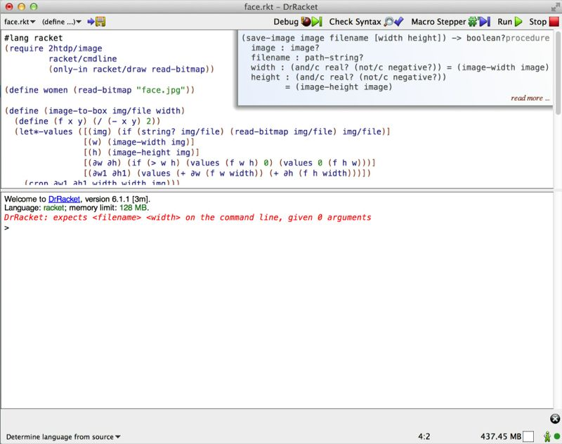
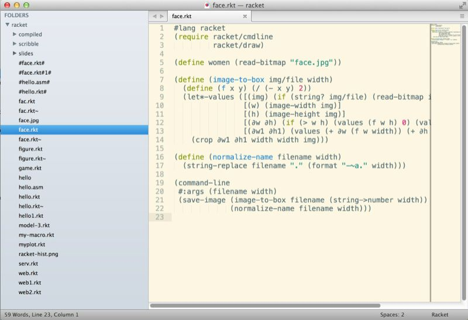
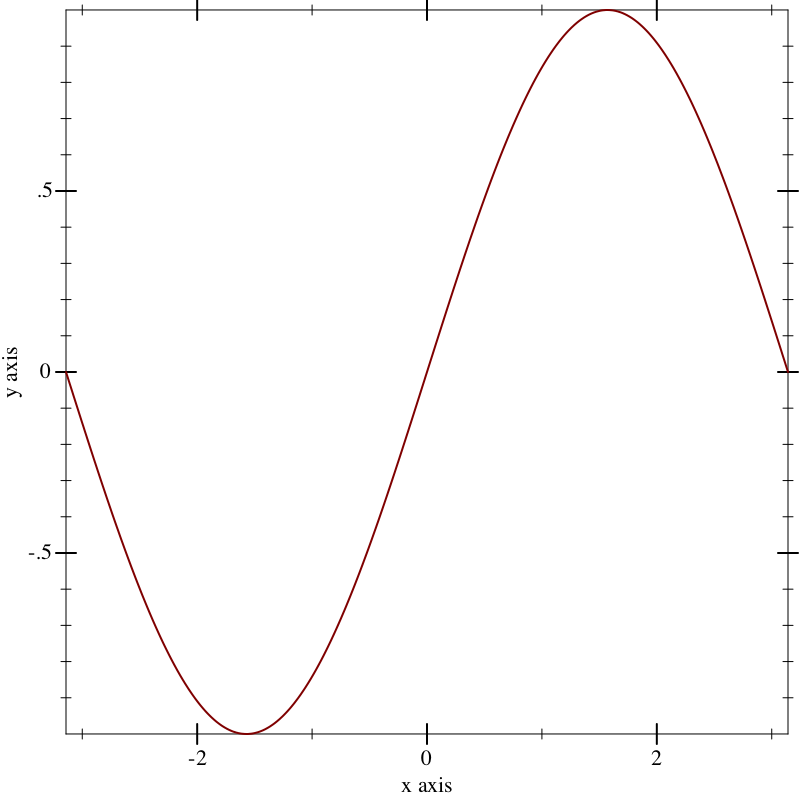
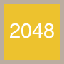
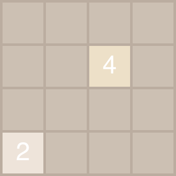
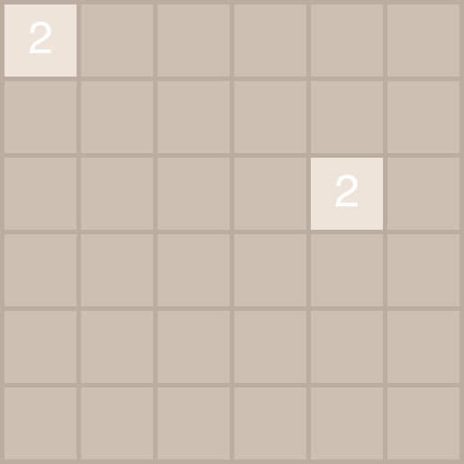

3 写点有意义的代码
学一门语言，如果不是为了使用它，必不长久。技术不能是为了技术而钻研，应该是为了应用而钻研。这一章我们通过写点有意义的代码，一起探索Racket的世界。
3.1 找个称手的编辑器
DrRacket 本身就是一个很棒的编辑器，可以用 ctrl+/ 自动补齐。在其右上角还有函数原型的提示，当你光标移动到某个函数上时，就会显示，非常方便。

如果已经是Vim或者Emacs的用户，那么可以安装 对应的插件。由于Emacs本身和Lisp有着千丝万缕的联系，建议如果是撰写Racket代码，可以优先考虑Emacs。我自己比较喜欢的Emacs配置是 purcell大神的配置，你可以按照提示安装，打开Emacs后使用 M-x（注：alt+x），输入 package-install，回车后，输入 racket-mode 或者 geiser 就可以安装Racket的插件了。当然，你也可以通过下载安装 racket-mode 或者 Geiser。更多详情，可以参考 Emacs。

此外，sublime-text也是一个不错的文本编辑工具，它也提供了 对应的插件。

3.2 照片裁剪
当然，osx本身就提供了 sips 这个程序让你可以很方便地写个bash脚本（或者Python脚本）就能完成这个任务。
现在进入正题。假设你正为你的孩子做一本画册，为了排版方便，里面的很多素材都需要正方形大小的800x800的图片（或者其它的什么尺寸），而你平日照下来的照片都不符合此要求，需要裁剪。当然，有一些工具可以帮助你完成这一要求，但如果你有成百上千张这样的照片需要处理，你就不得不考虑写个程序来完成这一任务了。
这里假设你依旧使用 DrRacket
我们先来实验一下算法。使用你喜欢的编辑器创建一个新的文件，并将其存放在 ~/study/racket/face.rkt 下。接下来你需要准备一幅图片，我们随便下载一张 无版权的照片，存为 face.jpg，放在和你当前工作目录相同的地方，然后在编辑器中输入：
> (require 2htdp/image racket/cmdline (only-in racket/draw read-bitmap))
> (define perfect-woman (read-bitmap "face.jpg"))
> perfect-woman 
运行后，你会看到这幅图被加载出来了。

在Racket里，crop 可以用来裁剪图片，我们试验一下：
> (crop 100 100 300 300 perfect-woman)
嗯，从图片的 (100, 100) 起（左上角为 (0, 0)），剪切宽300，长300的图片，正是我们需要的！了解了 crop 的运作方式，我们便可以尝试撰写第一个版本的函数：
> (define (image-to-box1 img width) (define (f x y) (/ (- x y) 2)) (let*-values ([(w) (image-width img)] [(h) (image-height img)] [(∂w ∂h) (if (> w h) (values (f w h) 0) (values 0 (f h w)))] [(∂w1 ∂h1) (values (+ ∂w (f w width)) (+ ∂h (f h width)))]) (crop ∂w1 ∂h1 width width img)))
> (image-to-box1 perfect-woman 400)
感觉还不错，是不是挺简单的？这里 image-width 和 image-height 用于获取图片的长和宽。算法很简单：如果图片的长宽不一致，先计算长或者宽额外需要略过的像素，然后再加上长宽分别要略过的像素。
接下来我们稍作修改，让其能接受一个文件：
> (define (image-to-box img/file width) (define (f x y) (/ (- x y) 2)) (let*-values ([(img) (if (string? img/file) (read-bitmap img/file) img/file)] [(w) (image-width img)] [(h) (image-height img)] [(∂w ∂h) (if (> w h) (values (f w h) 0) (values 0 (f h w)))] [(∂w1 ∂h1) (values (+ ∂w (f w width)) (+ ∂h (f h width)))]) (crop ∂w1 ∂h1 width width img)))
> (image-to-box "face.jpg" 400)

{kind=link}
越来越接近我们的目标了。如果要让这段代码能在命令行下运行，接受用户传入的参数，比如说：
$ racket face.rkt face.jpg 400注意第一行要声明语言：
#lang racket否则，会报错。
(require 2htdp/image racket/cmdline (only-in racket/draw read-bitmap)) (define women (read-bitmap "face.jpg")) (define (image-to-box img/file width) (define (f x y) (/ (- x y) 2)) (let*-values ([(img) (if (string? img/file) (read-bitmap img/file) img/file)] [(w) (image-width img)] [(h) (image-height img)] [(∂w ∂h) (if (> w h) (values (f w h) 0) (values 0 (f h w)))] [(∂w1 ∂h1) (values (+ ∂w (f w width)) (+ ∂h (f h width)))]) (crop ∂w1 ∂h1 width width img))) (define (normalize-name filename width) (string-replace filename "." (format "-~a." width))) (command-line #:args (filename width) (save-image (image-to-box filename (string->number width)) (normalize-name filename width)))
试着在命令行下运行：
$ racket face.rkt face.jpg 400
#t我们发现，这个目录下生成了一个新的图片 face-400.jpg。一切如我们所期望的那样。
目前这段代码有个问题，如果 width 大于图片的长或者宽呢？显然会出错。这就留给读者自行修改吧。
细心的读者会发现，生成的图片大小怎么这么大？让我们看看为什么：
$ file face-400.jpg
face-400.jpg: PNG image data, 400 x 400, 8-bit/color RGBA, non-interlaced哈。save-image 生成的竟然是PNG。看来它没有根据扩展名进行判断处理。为什么 save-image 生成的是PNG呢？如果你打开 /Applications/Racket v6.1.1/share/pkgs/htdp-lib/2htdp/private 里的 image-more.rkt，会发现它最终调了 (send bm save-file filename 'png)，所以不管扩展名怎么设置，都只能生成PNG。建议读者可以修改或者重写这个函数，让它更符合自己的需要。
3.3 做个2048小游戏
2048游戏 是个曾经风靡一时的javascript小游戏，玩家在一个4x4的棋盘上，通过上下左右四个键移动棋盘上的棋子，规则是这样：
开始时棋盘上随机有两个棋子，2或4都有可能，其它为空
玩家可以用方向键移动棋子。移动时所有棋子一起整体移动到用户按下的方向，直到不能移动为止
在移动方向上，相邻的两个数字如果相同，则合并为一个，合并后的结果为两个数字之和（即乘以2）
每次合并的结果作为得分，累加起来
每移动一次，棋盘上空闲的位置会随机出现2或者4，出现2的几率（90%）要远大于4（10%）
当棋子布满棋盘，四个方向移动时又无法进行合并，则游戏结束
感谢racket的 2htdp/universe package，我们可以很轻松地制作这样一个游戏。
3.3.1 数据结构和算法
对于这样一个4x4的棋盘，最直观的想法是用一个嵌套的 list 来表达：
> (define (make-board n) (make-list n (make-list n 0)))
> (make-board 4) '((0 0 0 0) (0 0 0 0) (0 0 0 0) (0 0 0 0))
用过python的人应该知道，可以使用 random.choice 从一个列表中随机选择。racket貌似没有这样的函数，不过没关系，我们自己写
> (define PIECE_DIST '(2 2 2 2 2 2 2 2 2 4))
> (define (choice l) (if (list? l) (list-ref l (random (length l))) (vector-ref l (random (vector-length l)))))
> (define (get-a-piece) (choice PIECE_DIST))
> (get-a-piece) 2
接下来我们要随机找出一个空闲的位置：
> (define (avail? lst) (if (list? lst) (ormap avail? lst) (zero? lst)))
> (define (get-empty-refs lst zero-fun?) (for/list ([item lst] [i (range (length lst))] #:when (zero-fun? item)) i))
> (define (put-random-piece lst) (if (avail? lst) (if (list? lst) (let* ([i (choice (get-empty-refs lst avail?))] [v (list-ref lst i)]) (append (take lst i) (cons (put-random-piece v) (drop lst (add1 i))))) (get-a-piece)) lst))
> (put-random-piece '((0 2 0 0) (2 4 8 16) (0 4 4 8) (2 0 0 0))) '((0 2 2 0) (2 4 8 16) (0 4 4 8) (2 0 0 0))
avail? 递归查看一个棋盘或者棋盘上的一行是否有 0，来决定是否可以往上放棋子。get-empty-refs 获取当前棋盘（或者一行）上面的的可放棋子的行（或者行中元素）的索引列表，以便于我们随机摆放棋子。最后，我们可以递归选择一个随机的行，随机的列，放入一个随机的棋子。
> (get-empty-refs '(0 0 0 2) avail?) '(0 1 2)
> (get-empty-refs '((2 2) (2 0) (0 0)) avail?) '(1 2)
> (put-random-piece '((0 2 0 0) (2 4 8 16) (0 4 4 8) (2 0 0 0))) '((0 2 2 0) (2 4 8 16) (0 4 4 8) (2 0 0 0))
这样，我们就可以初始化棋盘了：
> (define (init-board n) (put-random-piece (put-random-piece (make-board n))))
> (init-board 4) '((0 0 2 0) (0 0 0 0) (0 0 0 0) (2 0 0 0))
> (init-board 4) '((0 4 0 0) (0 0 0 0) (2 0 0 0) (0 0 0 0))
> (init-board 4) '((0 2 0 0) (0 2 0 0) (0 0 0 0) (0 0 0 0))
> (init-board 4) '((0 0 0 0) (0 2 0 2) (0 0 0 0) (0 0 0 0))
接下来就是按照规则合并棋子：
> (define (merge row) (cond [(<= (length row) 1) row] [(= (first row) (second row)) (cons (* 2 (first row)) (merge (drop row 2)))] [else (cons (first row) (merge (rest row)))]))
> (merge '(2 2 2 4 4 4 8)) '(4 2 8 4 8)
merge 会从第一个元素起递归处理列表中的所有元素，如果相等就两两合并，然后返回合并后的列表。但是，如果两个数值相同的元素，比如：'(2 0 2 0)，中间隔着 0 怎么办？我们可以用 filter 返回非 0 的元素，然后再把 0 补齐。这就是 move-row 要做的事情：
> (define (move-row row v left?) (let* ([n (length row)] [l (merge (filter (λ (x) (not (zero? x))) row))] [padding (make-list (- n (length l)) v)]) (if left? (append l padding) (append padding l))))
> (define (move lst v left?) (map (λ (x) (move-row x v left?)) lst))
> (move '((0 2 0 0) (2 4 8 16) (0 4 4 8) (2 0 0 0)) 0 #t) '((2 0 0 0) (2 4 8 16) (8 8 0 0) (2 0 0 0))
进一步，我们实现四个方向上的移动：
> (define (move-left lst) (put-random-piece (move lst 0 #t)))
> (define (move-right lst) (put-random-piece (move lst 0 #f)))
> (define (transpose lsts) (apply map list lsts))
> (define (move-up lst) ((compose1 transpose move-left transpose) lst))
> (define (move-down lst) ((compose1 transpose move-right transpose) lst))
apply 是个神奇的函数，如果你学过其它函数式编程语言，或者经常写javascript，那么你一定知道 apply。它能够让传递给函数的列表展开，成为函数执行时的若干个参数。下面的两个表达式是等价的：
> (apply map list '((1 2) (3 4))) '((1 3) (2 4))
> (map list '(1 2) '(3 4)) '((1 3) (2 4))
请自行类比 add1 和 add
关于函数链的更多信息，请参考 wikipedia: Method_chaining
compose1 是 compose 的只接受一个参数的特殊形式。compose 是函数式编程中另一个很重要的函数，它能够把传入的若干个接收同样参数并返回和参数相同形式的返回值的函数组合成一个 函数链，就像一个新函数一样。在函数链上，代码的执行是由内到外，如下所示：
> ((compose1 - sqrt add1) 8) -3
> ((compose1 add1 sqrt -) 8) 1.0+2.8284271247461903i
更多函数式编程的内容，请参考 函数式编程。我们回到2048游戏的算法设计中。当任意一个方向上移动的结果和移动前相同，意味着游戏结束：
> (define ALL-OPS (list move-right move-down move-left move-up))
> (define (finished? lst) (andmap (λ (op) (equal? lst (op lst))) ALL-OPS))
> (finished? '((2 8 4 2) (8 4 8 16) (4 32 2 4) (2 16 4 2))) #t
我们测试一下，随机走，能走多少步，游戏结束：
> (define (test-play lst step) (if (and (not (avail? lst)) (finished? lst)) (values lst step) (test-play ((choice ALL-OPS) lst) (add1 step))))
> (test-play (init-board 4) 0)
'((4 2 4 8) (32 8 64 16) (8 32 2 8) (4 2 4 2))
96
> (test-play (init-board 4) 0)
'((8 16 4 2) (32 2 16 32) (4 8 128 4) (2 4 2 16))
129
> (test-play (init-board 4) 0)
'((64 2 4 2) (4 32 2 8) (8 16 64 4) (4 2 8 2))
106
4x4的棋盘不够过瘾，我们来个大的：
> (test-play (init-board 6) 0)
'((8 4 16 8 4 2)
(2 2048 64 2 16 8)
(16 2 16 64 8 2)
(4 32 8 32 256 8)
(16 256 512 128 16 4)
(2 4 8 2 64 2))
1645
OK，现在这个游戏的基本算法就有了，geek们已经开始可以通过 move-xx 等 API 在 DrRacket 中进行游戏了。
3.3.2 制作游戏
我们先来点体力活，定义游戏的配色。由于互联网世界的颜色表示均使用十六进制的hex码，而 2htdp/image 里使用的 color 是用RGBA定义，因此我们需要做个颜色的转换：
> (define (hex->rgb hex [alpha 255]) (define r (regexp-match #px"^#(\\w{2})(\\w{2})(\\w{2})$" hex)) (define (append-hex s) (string-append "#x" s)) (define (color-alpha c) (apply color (append c (list alpha)))) (if r (color-alpha (map (compose1 string->number append-hex) (cdr r))) #f))
> (hex->rgb "#aabbcc" 186) (color 170 187 204 186)
有了这个函数，我们就可以很方便地定义配色和棋子大小：
> (define ALPHA 184)
> (define GRID-COLOR (hex->rgb "#bbada0"))
> (define TILE-BG (make-hash (map (λ (item) (cons (first item) (hex->rgb (second item)))) '((0 "#ccc0b3") (2 "#eee4da") (4 "#ede0c8") (8 "#f2b179") (16 "#f59563") (32 "#f67c5f") (64 "#f65e3b") (128 "#edcf72") (256 "#edcc61") (512 "#edc850") (1024 "#edc53f") (2048 "#edc22e")))))
> (define TILE-FG 'white)
> (define TILE-SIZE 80)
> (define TILE-TEXT-SIZE 50)
> (define MAX-TEXT-SIZE 65)
> (define TILE-SPACING 5)
接下来就是显示一个棋子。不同数值的棋子的颜色不同，而值为 0 的棋子不显示数字。我们还得处理一些显示的问题，比如说 2048 这样的数值，如果以预定义的大小显示，则会超出棋子的大小，所以我们需要 scale：
> (define (make-tile n) (define (text-content n) (if (zero? n) "" (number->string n))) (overlay (let* ([t (text (text-content n) TILE-TEXT-SIZE TILE-FG)] [v (max (image-width t) (image-height t))] [s (if (> v MAX-TEXT-SIZE) (/ MAX-TEXT-SIZE v) 1)]) (scale s t)) (square TILE-SIZE 'solid (hash-ref TILE-BG n)) (square (+ TILE-SIZE (* 2 TILE-SPACING)) 'solid GRID-COLOR)))
> (make-tile 2048) 
> (make-tile 2) > (make-tile 0)
如果你读了 Quick: An Introduction to Racket with Pictures 的话，你会对 racket/pict 中的 hc-append 和 vc-append 两个函数有印象。可惜这两个函数不接受我们使用 2htdp/image 中的各种方式制作出来的 image，所以 make-tile 生成的图片无法使用这两个函数，那我们就只好自己写了：
> (define (image-append images get-pos overlap) (if (<= (length images) 1) (car images) (let* ([a (first images)] [b (second images)] [img (apply overlay/xy (append (list a) (get-pos a overlap) (list b)))]) (image-append (cons img (drop images 2)) get-pos overlap))))
> (define (hc-append images [overlap 0]) (image-append images (λ (img o) (list (- (image-width img) o) 0)) overlap))
> (define (vc-append images [overlap 0]) (image-append images (λ (img o) (list 0 (- (image-height img) o))) overlap))
> (hc-append (map make-tile '(0 2 4 8)) 5) > (vc-append (map make-tile '(1024 256 4 8)) 5)
合并的方式很简单 —— 先将列表中头两个图片合并成一个，和剩下的图片组成新的列表，然后递归下去，直至合并成一张。hc-append 和 vc-append 其实就是调用 overlay/xy 的参数不同，所以这里抽象出来一个 image-append。
有了这两个函数，那么展示一个棋盘就轻而易举了：
> (define (show-board b) (let ([images (for/list ([row b]) (hc-append (map make-tile row) TILE-SPACING))]) (vc-append images TILE-SPACING)))
> (show-board (init-board 4)) 
> (show-board (init-board 6)) 